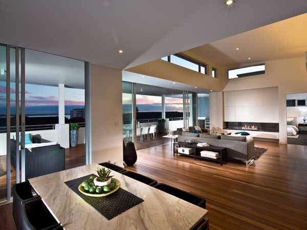
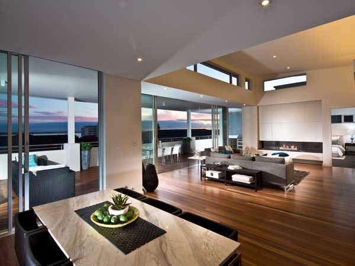

Sand & Finish
Sanding & Levelling
Got an uneven floor base? Let us handle it!
Our expert team will pre-sand your plywood subfloor, ensuring your floors are perfectly level and structurally sound.
After your timber is installed, we'll meticulously sand it down for a smooth, flawless finish that enhances the beauty and precision of your space.
Trust us to deliver a clean-cut look that exceeds your expectations. Choose our services for impeccable flooring results!
Wash & Buff
Enhance the beauty of your timber with our professional wash and buff service!
Perfect for pre-staining or finishing, or as a recurring maintenance service, we'll ensure your timber stays in top-notch condition.
Trust us to keep your floors looking their best with our expert touch-ups, leaving your timber spotless and impeccably maintained.
Choose our service for a consistently stunning finish!
Staining
Searching for that perfect color for your timber?
We've you covered! Our staining service can restore the original pigmentation or give your timber a fresh, new look.
Whether you're maintaining its natural beauty or going for a bold change, we'll ensure your timber looks exactly the way you want.
Choose us for expert staining that brings out the best in your floors!
Finishing
Protect your timber and ensure its longevity with our high-quality finishing services!
With years of experience, we provide top-grade finishes and can arrange a convenient application schedule.
Trust us to keep your boards well-protected and looking their best for years to come.
Choose JPC Timber for expert finishing and lasting quality!


 
